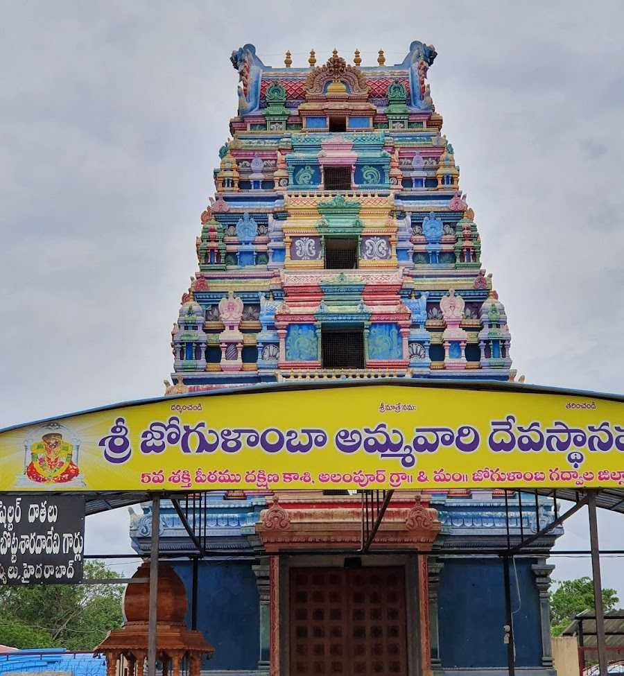
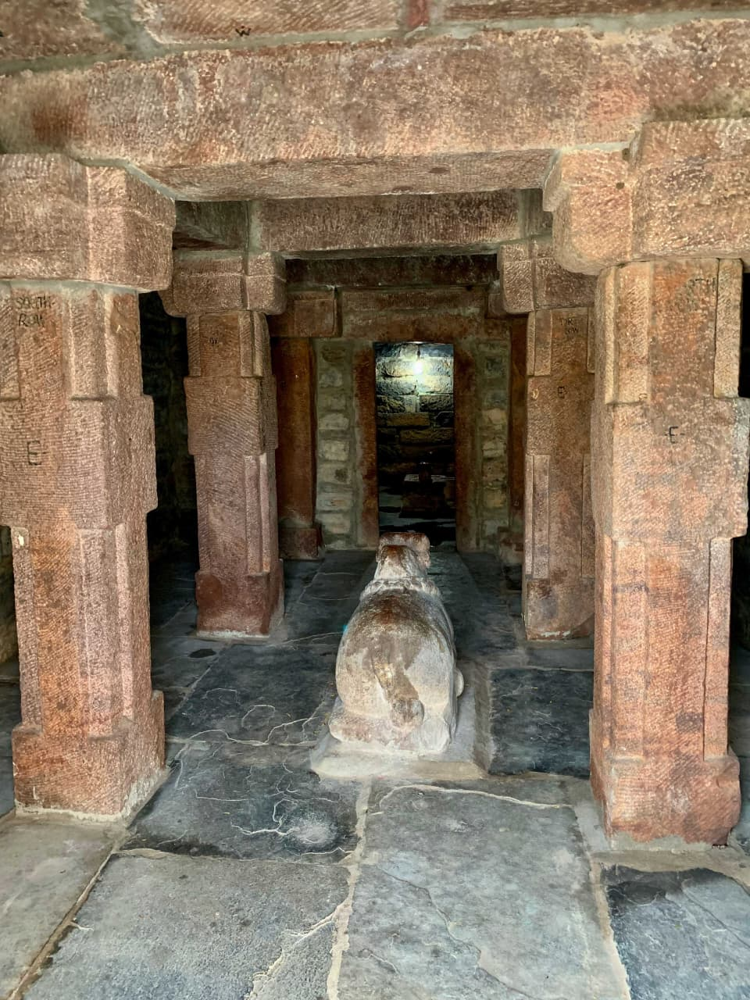
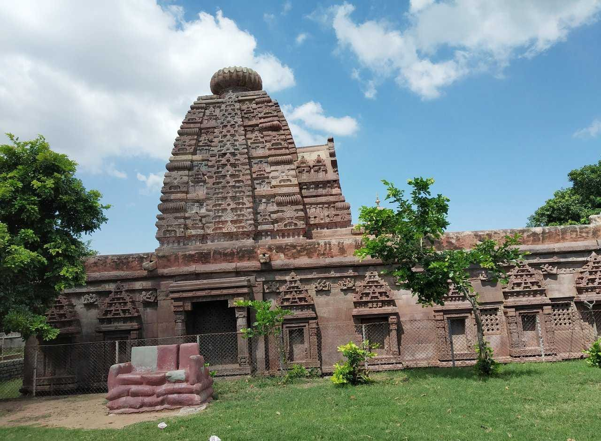
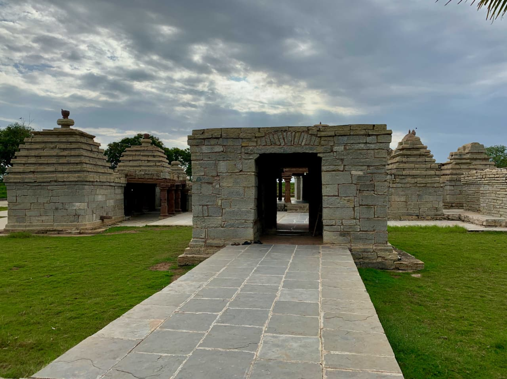

Jogulamba Temple is one of the 18 sacred Shakti Peethas in India and is dedicated to Goddess Jogulamba Devi. The temple is located at Alampur in Telangana near the banks of the Tungabhadra River. It is an important pilgrimage site visited by thousands of devotees every year. During Navaratri festival, the temple becomes highly vibrant.

The Papanasi Temples in Alampur are a group of ancient shrines located near the banks of the Krishna River in Telangana. They are primarily dedicated to Lord Shiva and are believed to cleanse devotees of their sins, which gives them the name "Papanasi" meaning destroyer of sins. These temples were originally built during the Chalukya dynasty and showcase remarkable early South Indian temple architecture. Surrounded by peaceful natural scenery, the temple complex offers a calm and spiritual atmosphere. It is an important pilgrimage site as well as a place of historical and archaeological significance.

